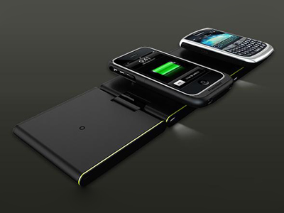
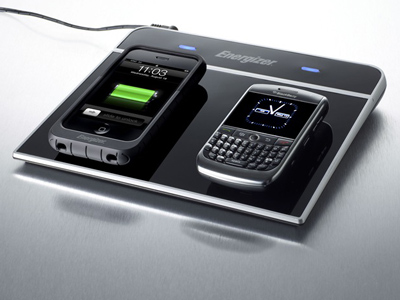

Зарядка без проводов


Даже после того как беспроводное подключение к Интернету стало обыденностью, передача энергии без проводов по-прежнему воспринимается многими как научная фантастика.Тем не менее, в течение последних нескольких лет в этом направлении велись активные исследования, и сейчас первые коммерческие устройства, позволяющие работать технике без еще одного типа проводов, уже доступны в продаже.
Настоящий бум сектор рынка беспроводных ЗАРЯДНЫХ УСТРОЙСТВ пережил осенью 2009 г., когда компании одна за другой начали анонсировать устройства индуктивной зарядки. Первые образцы беспроводных ЗАРЯДНЫХ УСТРОЙСТВ не были сертифицированы, поэтому поддерживали только четко ограниченный набор аппаратов.
Однако теперь ситуация изменилась. В конце лета 2010 года Wireless Power Consortium утвердил новый стандарт Qi 1.0, который позволит осуществлять зарядку всех сертифицированных портативных продуктов. Его разработка заняла полтора года. Qi 1.0 сможет передавать до 5 Вт энергии на устройство.
В настоящее время Wireless Power Consortium трудится над следующей версией Qi. Известно, что новая версия позволит передавать больше энергии на расстоянии и заряжать более «серьезную» технику, например нетбуки, ноутбуки, планшеты.
Состав и принцип работы индуктивной зарядки
Источник энергии
Основной принцип работы индуктивной зарядки основан на использовании эффекта электромагнитной индукции. Для этого необходимо наличие двух катушек и переменный ток, который будет создавать нестатическое электромагнитное поле. Первая катушка расположена в передатчике и подключена к сети.
Приемник энергии
Приемник также содержит катушку, ток в которой возникает только при изменении электромагнитного поля. Этого можно добиться, перемещая приемник в пространстве или используя переменный ток на передатчике. Если кто-то боится, что его может ударить искра, пробегающая между передатчиком и приемником, то он заблуждается, поскольку передачи заряда по воздуху не происходит - переменное магнитное поле, создаваемое первой катушкой, просто заставляет двигаться электроны в приемном устройстве.
Основной принцип работы индуктивной зарядки весьма прост и основывается на электромагнитной индукции. В отличие от классических зарядных устройств их беспроводные аналоги вместо медного проводника используют дополнительный блок преобразования, аналогичный обычному трансформатору, что приводит к некоторому снижению эффективности.
КПД этого блока, по данным разных производителей, колеблется от 50% до 90%. Wireless Power Consortium называет промежуточную цифру – 70%.
Достоинства новой технологии беспроводного ЗАРЯДНОГО УСТРОЙСТВА
Попробуем перечислить все достоинства новой технологии.
Удобство. Владелец телефона просто кладет аппарат на небольшую плоскую панель, не заботясь о подключении проводов и точном позиционировании устройства на передатчике.
Универсальность. Пользователи сертифицированной техники смогут подзаряжать ее на любой модели Qi-совместимой зарядки.
Экономность. Хотя общий КПД индуктивных зарядок и ниже, чем у традиционных, благодаря практически полному отсутствию энергопотребления при простое (0,0001 Вт) они вырываются вперед при длительной эксплуатации.
Практичность. Индуктивное зарядное устройство рассчитано на возможность одновременного «подключения» нескольких аппаратов. В отличие от традиционных зарядных устройств для этого не понадобятся дополнительные розетки.
Ну а с точки зрения эстетики отсутствие лишних проводов всегда было большим плюсом.
Доступные беспроводные ЗАРЯДНЫЕ УСТРОЙСТВА
Передача энергии на расстоянии это действительно новая технология, которая разрабатывалась для ряда инновационных проектов. В последние годы исследованиями беспроводной передачи энергии для использования в обычной технике занимались многие крупные компании. Достаточно назвать хотя бы Intel, Sony, Fujitsu, Energizer. И хотя некоторые инновационные разработки так и не вышли за пределы лабораторий, часть продуктов уже доступна на рынке.
Низкая востребованность систем передачи энергии без проводов является следствием того, что до появления официального стандарта Qi они поддерживали не самые распространенные устройства: BlackBerry, iPhone, Nintendo Wii.
Одной из первых индуктивную зарядку представила компания Powermat. Ее модели поддерживают iPhone, iPod, BlackBerry, а с недавних пор и Droid X. Столь ограниченный перечень обусловлен тем, что изначально ни один телефон не имеет приемника для получения энергии. Он инсталлируется в смартфон позднее вместе с новой батареей и, естественно, специальные версии аккумуляторов доступны только для самых популярных моделей. Обычно батарея с ресивером немного больше предшественницы, но в общем за счет продуманного дизайна в аппарате практически не выделяется.
Компания GEAR4 использует несколько иной подход. Вместо батареи в комплектацию ее зарядным устройством включен специальный корпус для iPhone, который должен быть на телефоне в момент подзарядки. Прорезиненную накладку необязательно снимать после того, как аккумулятор полностью заряжен, поскольку она может выполнять обычные защитные функции.

Самое новое зарядное устройство Energizer Qi уже прошло сертификацию в соответствии со стандартом Qi 1.0 и может заряжать одновременно до трех аппаратов. При этом на корпусе передатчика размещен дополнительный USB-порт, что позволяет добавить еще один.Беспроводные системы передачи энергии существуют не только для смартфонов. Еще полтора года назад Energizer приступила к выпуску Wiimote Induction Charging System для беспроводных контроллеров для Nintendo Wii. В отличие от аналогов других производителей в данном случае даже не надо снимать силиконовые накладки с Wiimote. Стоимость перечисленных зарядных устройств в комплекте с батареей обычно колеблется от $50 до $150.
Несмотря на то, что стандарт Qi 1.0 не предусматривает возможности передачи энергии, достаточной для подпитки крупных устройств, некоторые производители разработали собственные системы для подзарядки ноутбуков. Около года назад Dell представила 16-дюймовую модель Latitude Z с толщиной корпуса чуть более 1,25 см и массой около 2 кг, которая умеет заряжаться без проводов, находясь на специальной подставке. Стартовая цена лэптопа составляла $3645, а сейчас в зависимости от комплектации находится в районе $2000. Однако, массового выпуска универсальных индуктивных зарядных устройств, способных заряжать ноутбуки любого производителя, придется подождать еще пару лет.
Ближайшее будущее беспроводной передачи энергии
Очевидно, что в ближайшее время все усилия исследователей сконцентрируются на решении следующих задач: повышении КПД устройств, увеличении количества передаваемой энергии и расстояния. Также стоит ожидать, что новые модели индуктивных зарядок будут практически универсальны и смогут заряжать мыши, портативные консоли, телефоны, камеры, GPS и другие устройства.
Вероятно, в скором времени все портативные гаджеты и мобильники станут по умолчанию оснащаться Qi-совместимыми ресиверами, чтобы их не пришлось докупать вместе с новой батареей.
Прошедшей осенью Fujitsu объявила о том, что в 2012 г. отправит в массовое производство следующее поколение индуктивных зарядных устройств, которые могут заряжать мобильные устройства в 150 раз быстрее, чем первые опытные образцы. При этом эффективность передачи энергии в таких моделях будет составлять как минимум 85%.
В целом, учитывая, что еще год назад Sony представила рабочий прототип системы, передающей 60 Вт энергии, а WiTriCity заявляла о наличии устройств, способных передавать энергию на расстояние 2 метра, не исключено, что подобные технологии станут привычными уже через несколько лет.
Можно заглянуть в будущее и чуть дальше - уже сейчас Nissan демонстрирует прототип зарядного устройства для электромобилей, способный заряжать небольшие электрокары всего за 3 часа. При этом инженеры утверждают, что эффективность подобной системы такая же или даже выше, чем у обычной проводной подзарядки машин.